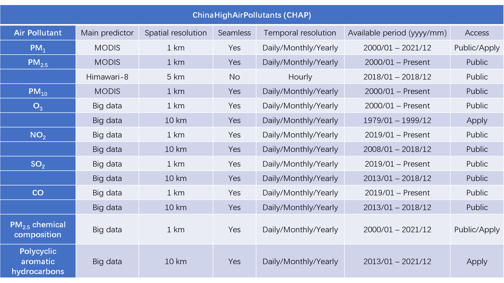
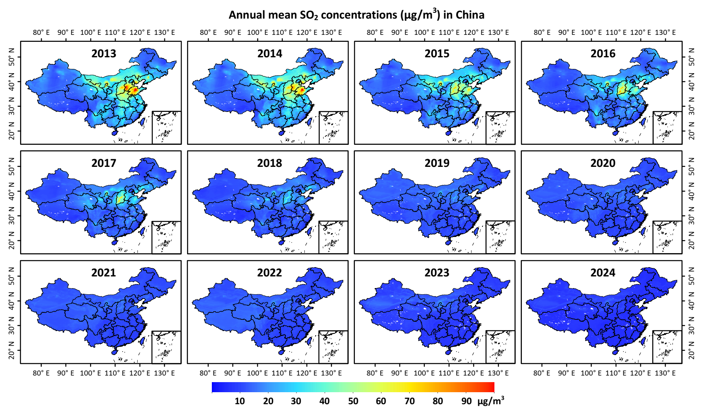

ChinaHighAirPollutants (CHAP)
New update: Daily seamless 1 km PMx and composition data released!
Brief Introduction
The ChinaHighAirPollutants (CHAP) dataset refers to the long-term, full-coverage, high-resolution, and high-quality datasets of ground-level air pollutants for China. It is generated from the big data (e.g., ground-based measurements, satellite remote sensing products, atmospheric reanalysis, and model simulations) using artificial intelligence by considering the spatiotemporal heterogeneity of air pollution. The CHAP dataset contains 7 major air pollutants (i.e., PM1, PM2.5, PM10, O3, NO2, SO2, and CO), and PM2.5 compositions (e.g., SO42-, NO3-, NH4+, Cl-, and BC, et al). This CHAP dataset is public and freely open to all users!
Dataset summary
ChinaHighPM2.5 dataset
[1] Big data (seamless): 1 km, 2000-2021, Daily/Monthly/Yearly (Version 4)
Link: https://doi.org/10.5281/zenodo.3539349
Reference:
Wei, J., Li, Z., Lyapustin, A., Sun, L., Peng, Y., Xue, W., Su, T., and Cribb, M. Reconstructing 1-km-resolution high-quality PM2.5 data records from 2000 to 2018 in China: spatiotemporal variations and policy implications. Remote Sensing of Environment, 2021, 252, 112136. https://doi.org/10.1016/j.rse.2020.112136 (ESI Hot and Highly Cited Paper)
Wei, J., Li, Z., Cribb, M., Huang, W., Xue, W., Sun, L., Guo, J., Peng, Y., Li, J., Lyapustin, A., Liu, L., Wu, H., and Song, Y. Improved 1 km resolution PM2.5 estimates across China using enhanced space-time extremely randomized trees. Atmospheric Chemistry and Physics, 2020, 20, 3273–3289. https://doi.org/10.5194/acp-20-3273-2020 (ESI Hot and Highly Cited Paper)
[2] Himawari-8: Eastern China, 5 km, 2018, Hourly
Link: http://doi.org/10.5281/zenodo.4784813
Reference: Wei, J., Li, Z., Pinker, R., Wang, J., Sun, L., Xue, W., Li, R., and Cribb, M. Himawari-8-derived diurnal variations of ground-level PM2.5 pollution across China using a fast space-time Light Gradient Boosting Machine (LightGBM). Atmospheric Chemistry and Physics, 2021, 21, 7863–7880. https://doi.org/10.5194/acp-21-7863-2021 (ESI Highly Cited Paper)

ChinaHighPMC dataset
Big data (seamless): 1 km, 2000-2021, Daily/Monthly/Yearly
Link: Available upon request via Email.
Reference: Wei, J., Li, Z., et al. Separating major PM2.5 chemical compositions across China via deep learning combined with observations, satellites, and models. To be submitted.

ChinaHighPM1 dataset
Big data (seamless): 1 km, 2000-2021, Daily/Monthly/Yearly
Link (2014-2018, Yealy, Version 2): https://doi.org/10.5281/zenodo.3758510
Reference: Wei, J., Li, Z., Guo, J., Sun, L., Huang, W., Xue, W., Fan, T, and Cribb, M. Satellite-derived 1-km-resolution PM1 concentrations from 2014 to 2018 across China. Environmental Science & Technology, 2019, 53(22), 13265-13274. https://doi.org/10.1021/acs.est.9b03258 (ESI Hot and Highly Cited Paper)

ChinaHighPM10 dataset
Big data (seamless): 1 km, 2000-2021, Daily/Monthly/Yearly
Link (Daily, 2013-2020, Version 3): http://doi.org/10.5281/zenodo.5090006
Link (Yealy, 2013-2020, Version 3): http://doi.org/10.5281/zenodo.5089979
Reference: Wei, J., Li, Z., Xue, W., Sun, L., Fan, T., Liu, L., Su, T., and Cribb, M. The ChinaHighPM10 dataset: generation, validation, and spatiotemporal variations from 2013 to 2019 across China. Environment International, 2021, 146, 106290. https://doi.org/10.1016/j.envint.2020.106290 (ESI Highly Cited Paper)

ChinaHighO3 dataset
Big data (seamless): 10 km, 1979-2020, Daily/Monthly/Yearly
Link (2013-2020, All, Version 1): https://doi.org/10.5281/zenodo.4400042
Big data (seamless): 1 km, 2013-2020, Daily/Monthly/Yearly
Link (2013-2020, All, Version 2): Will release soon!
Reference: Wei, J., Li, Z., Li, K., Dickerson, R., Pinker, R., Wang, J., Liu, X., Sun, L., Xue, W., and Cribb, M. Full-coverage mapping and spatiotemporal variations of ground-level ozone (O3) pollution from 2013 to 2020 across China. Remote Sensing of Environment, 2022, 270, 112775. https://doi.org/10.1016/j.rse.2021.112775

ChinaHighNO2 dataset
[1] Big data (seamless): 10 km, 2008-2020, Daily/Monthly/Yearly
Link (2013-2020, Yearly, Version 1): https://doi.org/10.5281/zenodo.4641542
Reference: Wei, J., et al. In preparation.
[2] Big data (seamless): 1 km, 2019-2020, Daily/Monthly/Yearly
Link (2013-2020, Monthly/Yearly, Version 1): https://doi.org/10.5281/zenodo.4571661
Reference: Wei, J., et al. Under review.

ChinaHighSO2 dataset
Big data (seamless): 10 km, 2013-2020, Daily/Monthly/Yearly
Link (2013-2020, Yearly, Version 1): https://doi.org/10.5281/zenodo.4641538
Reference: Wei, J., et al. In preparation.
ChinaHighCO dataset
Big data (seamless): 10 km, 2013-2020, Daily/Monthly/Yearly
Link (2013-2020, Yearly, Version 1): https://doi.org/10.5281/zenodo.4641530
Reference: Wei, J., et al. In preparation.

Brief Introduction
The GlobalLandHighAirPollutants (GLHAP) dataset refers to the long-term, full-coverage, high-resolution, and high-quality datasets of global ground-level air pollutants over land. Similarly, it is generated from the big data using artificial intelligence by considering the spatiotemporal heterogeneity of air pollution, and now it contains PM2.5 (1 km), and more species of air pollutants will be generated in the future.
Dataset overview
Brief Introduction
The USHighAirPollutants (USHAP) dataset refers to the long-term, full-coverage, high-resolution, and high-quality datasets of ground-level air pollutants for the Continental United States. Similarly, it is generated from the big data using artificial intelligence by considering the spatiotemporal heterogeneity of air pollution, and now it contains PM2.5 and BC (1 km), and more species of air pollutants will be generated in the future.
Dataset overview

Dataset tools
Data conversion (from .nc to .tif or .img): [1] Python code; [2] IDL code
News/reports on our dataset
University of Maryland: Li and Wei Published on Air Pollution in China
Beijing Normal University: Dr. Jing Wei released the high-resolution and high-quality air pollution dataset in China
Publications using our dataset (41)
Health assessment applications
Chen, L., Xie, J., Ma, T., Chen, M., Gao, D., Li, Y., Ma, Y., Wen, B., Jiang, J., Wang, X., Zhang, J., Chen, S., Wu, L., Li, W., Liu, X., Dong, B., Wei, J., Guo, X., Huang, S., Song, Y., Dong, Y., and Ma, J. Greenness alleviates the effects of ambient particulate matter on the risks of high blood pressure in children and adolescents. Science of The Total Environment, 2022, 812, 152431. https://doi.org/10.1016/j.scitotenv.2021.152431
Chen, L., Gao, D., Ma, T., Chen, M., Li, Y., Ma, Y., Wen, B., Jiang, J., Wang, X., Zhang, J., Chen, S., Wu, L., Li, W., Liu, X., Guo, X., Huang, S., Wei, J., Song, Y., Ma, J., and Dong, Y. Could greenness modify the effects of physical activity and air pollutants on overweight and obesity among children and adolescents? Science of The Total Environment, 2022, 155117. https://doi.org/10.1016/j.scitotenv.2022.155117
Ge, E., Gao, J., Wei, X., Ren, Z., Wei, J., Liu, X., Wang, W., Zhong, J., Lu, J., Tian, X., Fei, F., Chen, B., Wang, X., Peng, Y., Luo, M., and Lei, J. Effect modification of greenness on PM2.5 associated with all-cause mortality in a multidrug resistant tuberculosis cohort. Thorax, 2021. http://dx.doi.org/10.1136/thoraxjnl-2020-216819
Guo, H., Wei, J., Li, X., Ho, C., Song, Y., Wu, J., and Li, W. Do socioeconomic factors modify the effects of PM1 and SO2 on lung cancer incidence in China? Science of the Total Environment, 2021, 756, 143998. https://doi.org/10.1016/j.scitotenv.2020.143998
Guo, H., Liu, J., and Wei, J. Ambient ozone, PM1 and female lung cancer incidence in 436 Chinese counties. International Journal of Environmental Research and Public Health, 2021, 18(19), 10386. https://doi.org/10.3390/ijerph181910386
Guo, H., Li, X., Wei, J., Li, W., Wu, J., and Zhang, Y. Smaller particular matter, larger risk of female lung cancer incidence? Evidence from 436 Chinese counties. BMC Public Health, 2022, 22, 344. https://doi.org/10.1186/s12889-022-12622-1
Guo, H., Li, X., Li, W., Wu, J., and Wei, J. Climatic modification effects on the association between PM1 and lung cancer incidence in China. BMC Public Health, 2021, 21, 880. https://doi.org/10.1186/s12889-021-10912-8
Liu, M., Tang, W., Zhang, Y., Wang, Y., kangzhuo, B., Li, Y., Liu, X., Xu, S., Ao, L., Wang, Q., Wei, J., Chen, G., Li, S., Guo, Y., Yang, S., Han, D., and Zhao, X. Urban-rural differences in the association between long-term exposure to ambient air pollution and obesity in China. Environmental Research, 2021, 201, 111597. https://doi.org/10.1016/j.envres.2021.111597
Su, X., Zhang, S., Lin, Q., Wu, Y., Yang, Y., Yu, H., Huang, S., Luo, W., Wang, X., Lin, H., Ma, L., and Zhang, Z. Prenatal exposure to air pollution and neurodevelopmental delay in children: A birth cohort study in Foshan, China. Science of the Total Environment, 2022, 807, 151658. https://doi.org/10.1016/j.scitotenv.2021.151658
Wang, C., Wang, Y., Shi, Z., Sun, J., Gong, K., Li, J., Qin, M., Wei, J., Li, T., Kan, H., and Hu, J. Effects of using different exposure data to estimate changes in premature mortality attributable to PM2.5 and O3 in China. Environmental Pollution, 2021, 285, 117242. https://doi.org/10.1016/j.envpol.2021.117242
Wang, H., Yin, P., Fan, W., Wang, Y., Dong, Z., Deng, Q., and Zhou, M. Mortality risk associated with short-term exposure to particulate matter in China: estimating error and implication. Environmental Science & Technology, 2021, 55(2), 1110–1121. https://doi.org/10.1021/acs.est.0c05095
Wang, L., Chen, G., Pan, Y., Xia, J., Chen, L., Zhang , X., Silang, Y., Chen, J., Xu, H., Zeng, C., Wei, J., Li, S., Guo, Y., Yang, S., Hong, F., and Zhao, X. Association of long-term exposure to ambient air pollutants with blood lipids in Chinese adults: The China Multi-Ethnic Cohort Study. Environmental Research, 2021, 197, 111174. https://doi.org/10.1016/j.envres.2021.111174
Wang, X., Xu, Z., Ho, H., Song, Y., Zheng, H., Hossain, M., Khan, M., Bogale, D., Wei, J., and Cheng, J. Ambient particular matters (PM1, PM2.5, PM10) and childhood pneumonia: the smaller particle, the greater short-term impact? Science of the Total Environment, 2021, 772, 145509. https://doi.org/10.1016/j.scitotenv.2021.145509
Wang, Y., Cao, R., Xu, Z., Jin, J., Wang, J., Yang, T., Wei, J., Huang, J., and Li, G. Long-term exposure to ozone and diabetes incidence: A longitudinal cohort study in China. Science of the Total Environment, 2022, 816, 151634. https://doi.org/10.1016/j.scitotenv.2021.151634
Wu, J., Guo, B., Guan, H., Mi, F., Xu, J., Basang, Li, Y., Zuo, H., Wang, L., Feng, S., Wei, J., Cheng, G., Li, S., Wei, Y., Guo, Y., and Zhao, X. The association between long-term exposure to ambient air pollution and bone strength in China. Journal of Clinical Endocrinology & Metabolism, 2021, 106, e5097–e5108. https://doi.org/10.1210/clinem/dgab462
Xie, Y., Wang, Y., Zhang, Y., Fan, W., Dong, Z., Yin, P., and Zhou, M. Substantial health benefits of strengthening guidelines on indoor fine particulate matter in China. Environment International, 2022, 160, 107082. https://doi.org/10.1016/j.envint.2022.107082
Xu, H., Guo, B., Qian, W., Ciren, Z., Guo, W., Zeng, Q., Mao, D., Xiao, X., Wu, J., Wang, X., Wei, J., Chen, G., Li, S., Guo, Y., Meng, Q., and Zhao, X. Dietary pattern and long-term effects of particulate matter on blood pressure: a large cross-sectional study in Chinese adults. Hypertension, 2021, 78, 184–194. https://doi.org/10.1161/HYPERTENSIONAHA.121.17205 (Journal High Impact Paper)
Xu, R., Wang, Q., Wei, J., Lu, W., Wang, R., Liu, T., Wang, Y., Fan, Z., Li, Y., Xu, L., Shi, C., Li, G., Chen, G., Zhang, L., Zhou, Y., Liu, Y. and Sun, H. Association of short-term exposure to ambient air pollution with mortality from ischemic and hemorrhagic stroke. European Journal of Neurology, 2022. https://doi.org/10.1111/ene.15343
Xu, J., Zhou, J., Luo, P., Mao, D., Xu, W., Nima, Q., Cui, C., Yang, S., Ao, L., Wu, J., Wei, J., Chen, G., Li, S., Guo, Y., Zhang, J., Liu, Z., and Zhao, X. Associations of long-term exposure to ambient air pollution and physical activity with insomnia in Chinese adults. Science of the Total Environment, 2021, 792, 148197. https://doi.org/10.1016/j.scitotenv.2021.148197
Zhang, Y., Ke, L., Fu, Y., Di, Q., and Ma, X. Physical activity attenuates negative effects of short-term exposure to ambient air pollution on cognitive function. Environment International, 2022, 160, 107070. https://doi.org/10.1016/j.envint.2021.107070
Zhang, Y., Wei, J., Shi, Y., Quan, C., Ho, H., Song, Y., and Zhang, L. Effects of early-life exposure to submicron particulate air pollution on asthma development in Chinese preschool children. Journal of Allergy and Clinical Immunology, 2021, 148, 771-782. https://doi.org/10.1016/j.jaci.2021.02.030
Zhang, Y., Li, Z., Wei, J., Zhan, Y., Liu, L., Yang, Z., Zhang, Y., Liu, R., and Ma, Z. Longitudinal association between ambient nitrogen dioxide exposure and all-cause mortality in Chinese adults. Journal of Advanced Research, 2022. https://doi.org/10.1016/j.jare.2022.02.007
Zheng, H., Yi, W., Ding, Z., Xu, Z., Ho, H., Cheng, J., Hossain, M., Song, J., Fan, Y., Ni, J., Wang, Q., Xu, Y., Wei, J., Su, H. Evaluation of life expectancy loss associated with submicron and fine particulate matter (PM1 and PM2.5) air pollution in Nanjing, China. Environmental Science and Pollution Research, 2021, 28, 68134–68143. https://doi.org/10.1007/s11356-021-15244-z
魏海涛, 刘岩, 田智慧, 王晓蕾, 郝晓慧, 韦 晶. 河南省肺癌空间分布格局及环境因素影响. 地理学报, 2022, 77(1): 245-258.
Environmental applications
Cai, Z., Li, Z., Li, P., Li, J., Sun, H., Yang, Y., Gao, X., Ren, G., Ren, R., and Wei, J. Vertical distributions of aerosol microphysical and optical properties based on aircraft measurements made over the Loess Plateau in China. Atmospheric Environment, 2022, 270, 118888. https://doi.org/10.1016/j.atmosenv.2021.118888
Chen, H., Wang, N., Liu, Y., Zhang, Y., Lu, Y., Li, X., Chen, C., and Liu, Y. A green infrastructure planning framework–guidance for priority, hubs and types. Urban Forestry & Urban Greening, 2022, 70, 152651. https://doi.org/10.1016/j.ufug.2022.127545
Chen, Y., Zhou, Y., Ciren, N., Zhang, H., Wang, C., Deji, G., and Wang, X. Spatiotemporal variations of surface ozone and its influencing factors across Tibet: A Geodetector-based study. Science of the Total Environment, 2022, 813, 152651. https://doi.org/10.1016/j.scitotenv.2021.152651
Geng, G., Xiao, Q., Liu, S., Liu, X., Cheng, J., Zheng, Y., Xue, T., Tong, D., Zheng, B., Peng, Y., Huang, X., He, K., and Zhang, Q. Tracking air pollution in China: Near real-time PM2.5 retrievals from multisource data fusion. Environmental Science & Technology, 2021, 55, 12106-12115. https://doi.org/10.1021/acs.est.1c01863
Jiang, Q., Zhang, H., Wang, F., and Wang, F. Research on the growth mechanism of PM2.5 in Central and Eastern China during autumn and winter from 2013–2020. Atmosphere, 2022, 13, 134. https://doi.org/10.3390/atmos13010134
Jiang, Y., Chen, S., Hu, B., Zhou, Y., Liang, Z., Jiao, X., Huang, M., Wei, J., and Shi, Z. A comprehensive framework for assessing the impact of potential agricultural pollution on grain security and human health in economically developed areas. Environmental Pollution, 2020, 263, 114653. https://doi.org/10.1016/j.envpol.2020.114653
Li, X., Xue, W., Wang, K., Che, Y., and Wei, J. Environmental regulation and synergistic effects of PM2.5 control in China. Journal of Cleaner Production, 2022, 337, 130438. https://doi.org/10.1016/j.jclepro.2022.130438
Niu, L., Zhang, Z., Peng, Z., Liang, Y., Liu, M., Jiang, Y., Wei, J., and Tang, R. Identifying surface urban heat island drivers and their spatial heterogeneity in China’s 281 Cities: An empirical study based on multiscale geographically weighted regression. Remote Sensing, 2021, 13, 4428. https://doi.org/10.3390/rs13214428
Shi, H., Zhang, J., Zhao, B., Xia, X., Hu, B., Li, X., Wei, J., Liu, M., Bian, Y., Fu, D., Gu, Y., and Liou, K. Surface brightening in eastern and central China since the implementation of the Clean Air Action in 2013: causes and implications. Geophysical Research Letters, 2021, 48(3), e2020GL091105. https://doi.org/10.1029/2020GL091105
Wang, Z., Hu, B., Huang, B., Ma, Z., Biswas, A., Jiang, Y., and Shi, Z. Predicting annual PM2.5 in mainland China from 2014 to 2020 using multi temporal satellite product: An improved deep learning approach with spatial generalization ability. ISPRS Journal of Photogrammetry and Remote Sensing, 2022, 187, 141-158. https://doi.org/10.1016/j.isprsjprs.2022.03.002
Xu, Y., Huang, Z., Ou, J., Jia, G., Wu, L., Liu, H., Lu, M., Fan, M., Wei, J., Chen, L., and Zheng, J. Near-real-time estimation of hourly open biomass burning emissions in China using multiple satellite retrievals. Science of the Total Environment, 2022, 817, 152777. https://doi.org/10.1016/j.scitotenv.2021.152777
Yan, C., Shi, G., and Yang, F. The rationality of PM2.5 monitoring sites' locations based on exposure level across eastern China. Environmental Research Communications, 2022, 011001. https://doi.org/10.1088/2515-7620/ac4641
Zhang, L., Zhao, N., Zhang, W., Wilson, J. Changes in long-term PM2.5 pollution in the urban and suburban areas of China’s three largest urban agglomerations from 2000 to 2020. Remote Sensing, 2022, 14(7), 1716. https://doi.org/10.3390/rs14071716
牛 陆, 张正峰, 彭 中, 姜亚珍, 刘 萌, 周孝明, 唐荣林. 中国地表城市热岛驱动因素及其空间异质性. 中国环境科学, 2022, 42(2), 945-953.
Economic and other applications
Jiang, Y., Huang, M., Chen, X., Wang, Z., Xiao, L., Xu, K., Zhang, S., Wang, M., and Shi, Z. Identification and risk prediction of potentially contaminated sites in the Yangtze River Delta. Science of the Total Environment, 2022, 815, 151982. https://doi.org/10.1016/j.scitotenv.2021.151982
Jiang, Y., Tian, S., Xu, Z., Gao, L., Xiao, L., Chen, S., Xu, K., Chang, J., Luo, Z., and Shi, Z. Decoupling environmental impact from economic growth to achieve Sustainable Development Goals in China. Journal of Environmental Management, 2022, 312, 114978. https://doi.org/10.1016/j.jenvman.2022.114978
Pan, X., Li, J., Wei, J., Yue, Y., and Liu, L. Measuring green development level at a regional scale: framework, model, and application. Environmental Monitoring and Assessment, 2022, 194, 343. https://doi.org/10.1007/s10661-022-09953-2
Xue, W., Zhang, J., Zhong, C., Li, X., and Wei, J. Spatiotemporal PM2.5 variations and its response to the industrial structure from 2000 to 2018 in the Beijing-Tianjin-Hebei region. Journal of Cleaner Production, 2021, 279, 123742. https://doi.org/10.1016/j.jclepro.2020.123742 (ESI Highly Cited Paper)
Other related air pollution datasets
[1] Global monthly merged Satellite-AERONET AOD product, Peking University (Dr. Jing Li)
[2] Tracking Air Pollution in China (TAP), Tsinghua University (Dr. Qiang Zhang and Dr. Guannan Geng)
GlobalLandHighAirPollutants (GLHAP)
USHighAirPollutants (USHAP)
-------------------------------------------------------------
Welcome to use our dataset for related scientific research! Note that this dataset is continuously updated, and if you need longer-period or higher temporal-resolution (e.g., hourly, daily or monthly) data, please contact me (weijing_rs@163.com; weijing.rs@gmail.com).
-------------------------------------------------------------